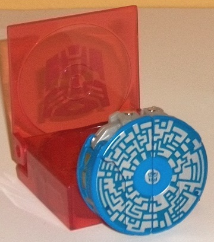
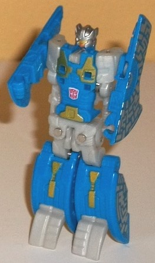
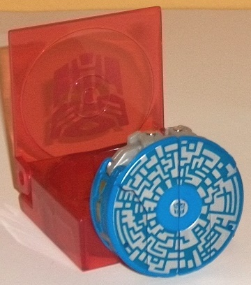
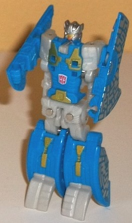
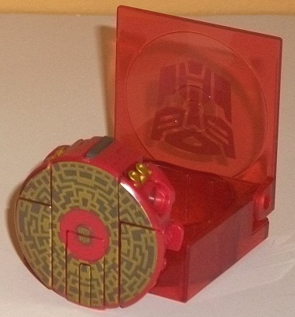
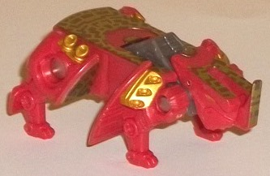

 
Difficulty of Transformation : Very Easy
Color Scheme : Moderately light blue, light milky gray, silver, bright orange, and dark aquamarine
Individual Rating : 7.0
Allegiances
: Autobot
Size
: Legends 2-pack
Overall Rating
: 6.5
 Eject
Eject


Difficulty of Transformation
: Very
Easy
Color Scheme
: Moderately light blue,
light milky gray, silver, bright orange, and dark aquamarine
Individual Rating
: 7.0
(NOTE: Because this is a repaint, this is not a full-blown review. This mainly covers any changes made to the mold and the color scheme, and merely compares it to FoC Decepticon Rumble. For a review on the mold itself, read the review of FoC Decepticon Rumble here .)
The first thing that
strikes me about Eject is how nice of a color the blue plastic that makes
up the majority of him is. It's a light shade of the color, but not SO
light that it looks garish or loud. It really gives Eject a bit of visual
pop-- moreso than I would have expected. Unfortunately, some of his "robot
bits" are that blah shade of light milky gray that has been used in entirely
too many TFs is the past several years, though at least it goes alright
with the blue. What looks much better on Eject are the silver "circuitry
line" paint apps on the top of his data disc mode and on his robot head.
The former also has a dark dull aquamarine for the "background" color on
the data disc's top, which complements the blue nicely and allows the silver
circuitry detailing to pop all the more. There's also a few nice gold paint
apps on his robot chest and legs, as well as an excellently-painted face
with a gold visor and an orange faceplate-- this helps give Eject just
a bit more color variation, and it's appreciated. Just like with the other
FoC data disc 2-packs, Eject comes with his own case-- a transparent red
Autobot one, appropriately enough, with a silver Autobot symbol painted
on the top side.
Eject does have some
mold changes made to keep him more in-line with the general appearance
of the G1 toy's robot mode-- his head has been remolded with a nice, crisp
sculpt with a visor and faceplate, and his chest and lower leg pieces have
also been remolded to show more G1-accurate details. This helps keep Eject
looking a bit more visually different than Rumble (who's also mostly blue),
and makes the usage of this same mold for all the FoC data disc humanoid
TFs more palatable. In fact, overall I think I prefer the mold detailing
on this compared to Rumble/
Frenzy's
,
due to the better head sculpt.
 Ramhorn
Ramhorn


Difficulty of Transformation
: Very
Easy
Color Scheme
: Pale orangish red,
milky gunmetal gray, metallic gold, and some pale greyish brown
Individual Rating
: 6.0
Ramhorn's alt mode is--
as you'd expect from these FoC 2-packs-- a data disc. The top of it looks
quite good, and is fairly eye-catching-- I love how the metallic gold "circuitry"
detailing contrasts so well with the pale orangish red plastic that serves
as Ramhorn's dominant plastic color in both modes. Pale greyish brown seems
like an odd color choice to use as the "backing" for the top of the disc
mode behind the gold detailing, but it does complement the gold fairly
well, looking a bit like a gold-bronze mix, in fact. Unfortunately, when
you get past the top part that's all painted, this mode is fairly weak.
It's pretty darned obvious where Ramhorn's legs are along the sides of
the disc, and his little tail piece flips out into its beast mode position
incredibly easily. All this would be more forgiveable if the sides of this
mode were more firmly a solid circle in shape, but they're not-- they're
just his beast bits folded up in the vague shape of a circle, made to only
look good from a top-down view or if he's in the carrying case he comes
with. (Just as with his buddy Eject, Ramhorn has a transparent red carrying
case that you can store him in in disc mode, with a silver Autobot symbol
painted on the top.)
Just like with all the
other FoC data discs, Ramhorn transforms from his disc mode with a simple
press of a small button on the disc's underside. When fired from Blaster
(or Soundwave)'s chest, the auto-transformation seems to perform correctly
about half of the time, with the other half of the time it either not activating
at all or only partially transforming. So that part of his gimmick could
use a bit of fine-tuning. As far as transformations go, Ramhorn's isn't
particularly impressive, not engaging in many of the automatic flips and
rotations that the other data disc molds do. His head/neck assembly simply
goes forward a bit and his legs fold downwards; that's the extent of it.
Of course, this doesn't matter that much if his rhino mode looks great,
but my overall impression of it is... mixed. On the positive side, his
color scheme still looks nice, and the addition of a bit of milky gunmetal
gray helps add slightly more variation to it, albeit not much. His legs
are also fairly well-done-- yeah, there's noticeable fragments of the top
of the disc mode on the back of them, but that's rather small potatoes,
and they're nice and bulky and appropriately stubby for a rhino, with the
mold detailing on these parts particularly good. However... Ramhorn's main
body just looks weird. It's overly flat (the little gray bump in the middle
doesn't help that much), overly wide, and his head just looks plain awful.
His horn looks like it's coming out of his mouth the way his mold detailing
is situated, and with the flat top to his head he almost looks more like
some kind of triceratops-esque dinosaur than a rhino. From a frontal view,
this mode also doesn't really look like anything, relying solely on a side
view to let you figure out what Ramhorn's supposed to be. As for articulation,
his horn can move up-and-down a little, but that's about it. As tends to
be the case with the data disc bots, their articulation's been sacrificed
for their spring-loaded transformation gimmick-- Ramhorn CAN technically
move backwards at his front shoulders and forwards at his back legs, but
they spring back into their default place as soon as you let go of them.
The Eject & Ramhorn set-- like many of the FoC data disc sets-- is a mixed bag. Eject is an excellent redeco of the pretty decent Rumble/Frenzy mold with some nice remolding done to make him more G1-accurate. However, even though Ramhorn is the only completely unique design among the various FoC data disc toys, that's probably for the best-- his color scheme is decent, but his disc mode isn't convincing beyond the top side and his rhino mode has some incredibly odd proportions for the body and head (and, next to the Ravage mold, is my least favorite of the FoC disc molds). If you want more buddies for FoC Blaster and don't mind the sacrifices made particularly to Ramhorn for the auto-transforming gimmick, this will probably be a pickup for you-- but it's more of a recommendation based on completing Blaster's minions than an actual recommendation for the toys themselves. If you don't like the auto-transforming gimmick of the disc molds, there's not really anything that's going to convince you otherwise in this set.
Reviews by Beastbot